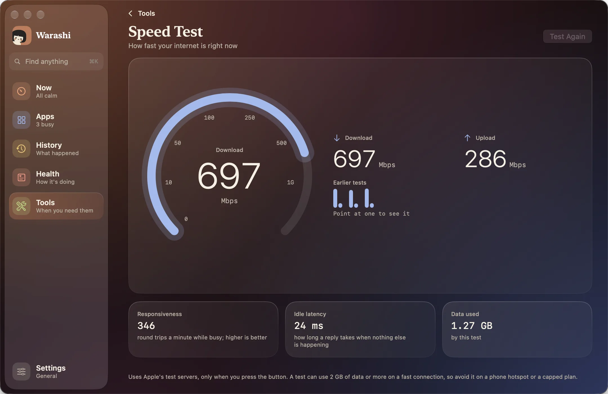

Il tuo Mac ha un buon test di velocità integrato, fatto da Apple. Ecco come usarlo e cosa significano davvero i risultati.
1. Fai il test di Apple
Apri il Terminale (Applicazioni › Utility), scrivi networkQuality e premi Invio. Ci vuole circa un minuto, poi mostra la capacità di upload e download e la reattività della connessione.
2. Cosa significano i numeri
- Download e upload indicano quanto la tua connessione può muovere ogni secondo, in megabit. Il download conta per lo streaming e le pagine web; l'upload per le videochiamate e i backup.
- La reattività indica quanti scambi andata e ritorno la tua connessione gestisce in un minuto mentre è sotto carico. Più alta è, meglio è. Una connessione veloce con bassa reattività è il motivo per cui una videochiamata può scattare mentre qualcun altro scarica.
- Latenza a riposo è il tempo che impiega una risposta quando non c'è altro in corso.
3. Ottieni un risultato di cui fidarti
- Metti in pausa prima i download grandi, i backup nel cloud e lo streaming.
- Una VPN di solito abbassa il risultato, quindi spegnila per testare la connessione in sé.
- Con il Wi-Fi, fai il test vicino al router e poi da dove di solito ti siedi: la differenza ti dice se il problema è il Wi-Fi o internet.
- Eseguilo due o tre volte. Un solo risultato è solo un istante.
4. Attenzione ai tuoi dati
Un test di velocità sposta dati veri, che possono arrivare a 2 GB o più su una connessione veloce. Evita di eseguirlo su un hotspot del telefono o con un piano a consumo limitato.



Warashi lo fa per te. Il Test di velocità esegue il test di Apple con un clic e mostra la tua velocità dal vivo su un quadrante. Puoi lasciare la pagina mentre gira, e conserva gli ultimi risultati per confrontarli. Scarica la beta gratuita →